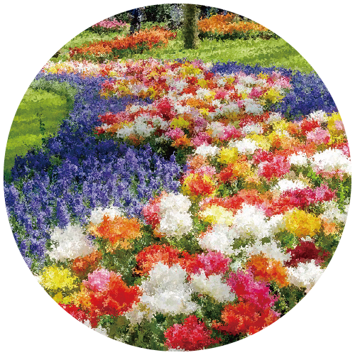
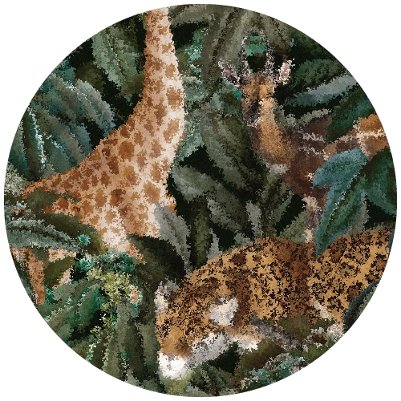
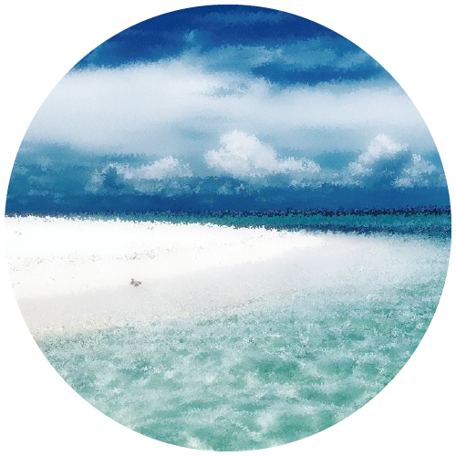
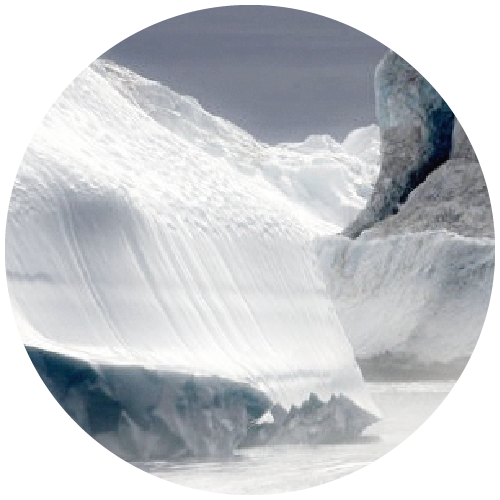
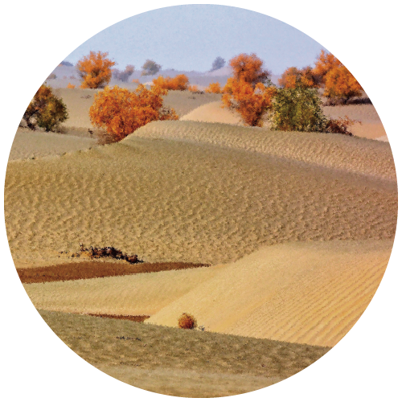

Lazi
一段旅程
這是一段妳與自己的旅程，目標不是終點，風景才是寶藏。請幫我找個舒適且不會被打擾的空間，閉上眼睛，直到心裡沉澱下來，我們即將開始。
START
森林
牆
餐桌
坡
風景
森
林
妳進入一個森林，越走越深之後，已經不見任何文明的遺跡，甚至連前人走過的腳印都愈發模糊，這是出現一個生物，妳覺得那是什麼？形容得愈詳盡愈好。
NEXT
牆
再走不久，前方出現了一個牆，妳覺得他是什麼形式的牆面？
NEXT
餐
桌
繞過那個牆後，你發現了一間屋子，屋內有一個餐桌，妳覺得椅子有幾張，桌巾是什麼樣的風格？
NEXT
坡
由屋子的後門出來，妳看到了一個坡，這是個怎麼樣的坡？
NEXT
風
景
越過這個坡之後，請以底下5張圖，以第一直覺選擇最相近的風景。
1 / 5

繽紛花園
2 / 5

野性叢林
3 / 5

蔚藍海岸
4 / 5

高冷俐落
5 / 5

溫暖晨光
❮
❯